Welcome to my world of software engineering! I'm a passionate problem-solver and code enthusiast on a mission to craft elegant solutions that make a meaningful impact. With a Master's degree in Computer Science and a diverse skill set spanning languages like Python, Java, and JavaScript, I thrive in the dynamic realm of web and application development. From architecting microservices to constructing robust REST APIs, I love diving into the complexities of modern technology stacks. With each line of code, I strive to create experiences that not only empower users but also ignite their imaginations. Let's embark on an exciting journey together and turn ideas into reality!
TECHNICAL HIGHLIGHTS
Welcome to the Technological Highlights section of my portfolio, where I present a collection of my key technical skills and expertise. With a strong foundation in cutting-edge technologies and frameworks, I bring a versatile skill set to develop robust and scalable web applications. From back-end development using Spring Boot (Java), Django, Flask (Python), and Node.js (JavaScript), to front-end mastery with React and Angular, I consistently deliver captivating user experiences. My technical highlights include:
These technical highlights reflect my deep understanding and proficiency in the latest tools and technologies, enabling me to deliver exceptional software solutions. I invite you to explore further and witness the value I bring to software engineering projects.
Web Frameworks: Highly skilled in Spring Boot (Java), Django, Flask (Python), and Node.js, enabling the creation of robust and scalable web applications with efficient back-end functionalities.
Front-end Development: Proficient in building captivating user interfaces using modern frameworks such as React, ensuring seamless and intuitive user experiences.
RESTful APIs: Expertise in designing and implementing REST APIs, facilitating seamless communication between applications and enabling efficient data exchange.
Cloud Technologies: Proficient in leveraging AWS services, including EC2, Lambda, S3, and more, for secure and scalable cloud-based solutions.
Containerization and Deployment: Skilled in Docker, Kubernetes, and CI/CD pipelines (e.g., Jenkins, GitHub Actions), enabling streamlined deployment processes and efficient scalability.
Databases: Experienced in working with various databases, including MySQL, SQLite, Firebase, MongoDB, enabling efficient data management and retrieval.
Test-Driven Development (TDD): Practiced TDD methodologies, ensuring the creation of high-quality, robust, and maintainable code.
Agile Development: Proficient in working within agile development environments, participating in sprints, conducting code reviews, and fostering collaboration.
Version Control: Experienced in utilizing Git and GitHub for efficient version control and collaboration in software development projects.
CERTIFICATIONS
AWS Certified Developer - Associate: I have successfully obtained the AWS Developer Associate Certificate, demonstrating my expertise in developing applications on the AWS platform. With a score of 938 out of 1000, I have proven my strong understanding and proficiency in AWS development practices. These certifications serve as a testament to my dedication and commitment to staying at the forefront of cloud computing technologies.
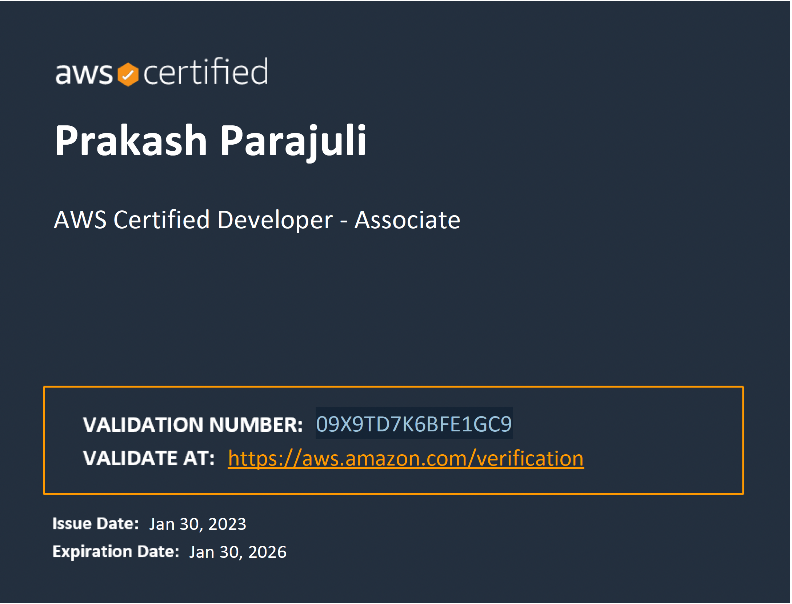
Certified Kubernetes Application Developer I have successfully obtained the AWS Developer Associate Certificate, demonstrating my expertise in developing applications on the AWS platform. With a score of 938 out of 1000, I have proven my strong understanding and proficiency in AWS development practices. These certifications serve as a testament to my dedication and commitment to staying at the forefront of cloud computing technologies.
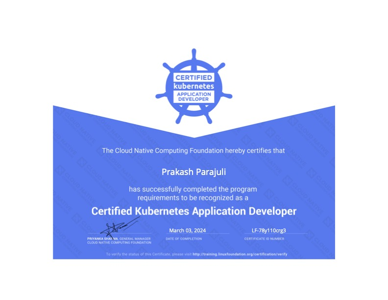
Hashicorp Certified Terraform - Associate: I have successfully obtained the Hashicorp Certified Terraform - Associate Certificate, highlighting my strong expertise in using Terraform for infrastructure as code (IAC) deployments. With an impressive score, I've showcased my deep understanding and skill in leveraging Terraform to automate cloud infrastructure across platforms. This certification underscores my commitment to mastering innovative technologies in infrastructure orchestration and solidifies my position as a leader in cloud infrastructure management.
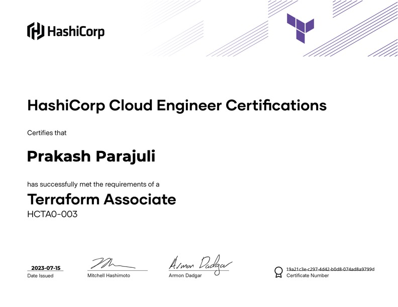
Certified Scrum Master I have successfully obtained the Hashicorp Certified Terraform - Associate Certificate, highlighting my strong expertise in using Terraform for infrastructure as code (IAC) deployments. With an impressive score, I've showcased my deep understanding and skill in leveraging Terraform to automate cloud infrastructure across platforms. This certification underscores my commitment to mastering innovative technologies in infrastructure orchestration and solidifies my position as a leader in cloud infrastructure management.
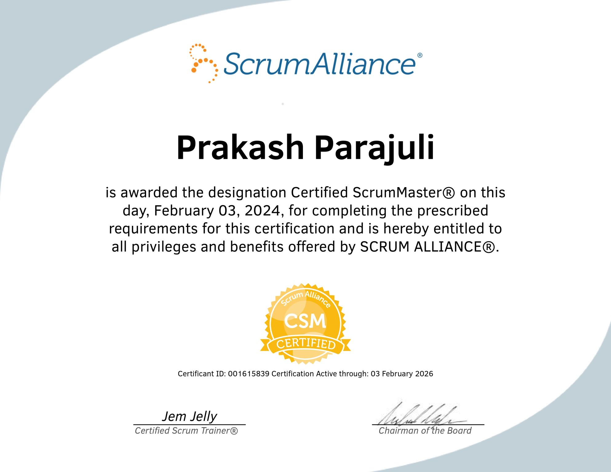
EDUCATION AND EXPERIENCES
University of Southern California
MS in CS (Aug. 2021 - May 2023)
GPA: 3.82
Key Courses:
Analysis of Algorithm
Database Systems
Applied Natural Language Processing
Web Technologies
Advanced Mobile Devices And Game Consoles
Machine Learning for Data Science
Information Retrieval and Web Search Engines
VizyPay LLC, Waukee, Iowa
Software Developer
• Enhanced ETL pipelines and optimized query performance.
• Integrated Apache Airflow, PySpark, and Postgres in Docker environments.
• Implemented SSO with Microsoft Azure Active Directory.
• Designed a robust IAM system and created secure REST APIs.
• Technologies Used: Apache Airflow, PySpark, NestJS, Angular, Docker, Postgres, MongoDB, Azure.
University of Southern California
Course Grader, Data Structures and Algorithm
• Graded assignments and exams, ensuring high academic standards.
• Provided detailed feedback to students and participated in academic discussions.
E.K. Solutions Pvt. Ltd, Kathmandu, Nepal
Computer Vision Engineer
• Developed APIs in Flask for Person Re-Identification.
• Engineered high-performing IP streamer using Jetson Nano.
• Technologies Used: Python, OpenCV, BOTO 3, Machine Learning, AWS.
Karyathalo IT & Web Solutions, Kathmandu, Nepal
Software Engineer
• Implemented logistics solutions and developed REST APIs.
• Optimized load time and enhanced functionality with AWS and Google Maps APIs.
• Utilized Docker and practiced Test-Driven Development.
• Technologies Used: Java, Spring Boot, NodeJS, React, Angular, Docker, AWS, Apache Kafka, Kubernetes.
Brand Builder Pvt. Ltd, Pokhara, Nepal
Software Engineer
• Developed Real Estate CRM and Lead Generation applications.
• Designed database schemas and configured data storage solutions.
• Deployed Infrastructure as Code solutions with AWS.
• Technologies Used: Java, NodeJS, Angular, React, AWS, MySQL, MongoDB.
Advanced College of Engineering & Management, Kathmandu, Nepal
Bachelor's in Computer Engineering
GPA: 4.0/4.0
Key Courses:
Operating Systems
Computer Network
Data Structures and Algorithm
Software Engineering
RESEARCH BASED PROJECTS
NER For Clinical Patient Notes
The project aims to build a neural network model that identifies and annotates specific concepts in English patient notes.
The approach is to extract the key information from the patient notes in the form of sequence labeling task where we predict
the entity boundary.
Vehicle Monitoring System using IOT
The project presents the use of RFID technology to
monitor the vehicle information. The system is an IoT based
android application for assistance on vehicle monitoring. The vehicle information is collected when it passes through RFID station and stored in Firebase.
These data than can be used by a user through an android application.
PROJECTS
Distributed Microservices Archictecure in Spring Boot
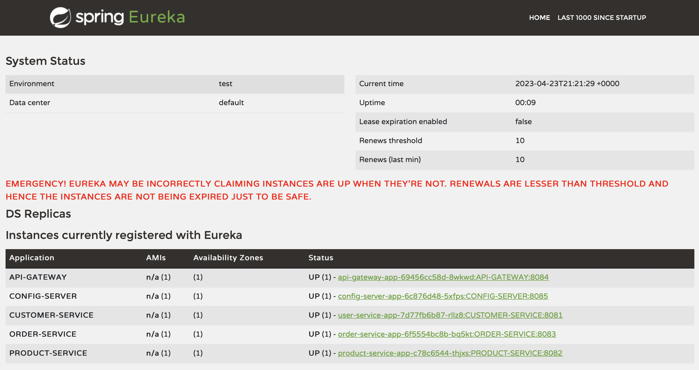
This exciting project showcases the implementation of a highly scalable microservices architecture using Spring Boot. It leverages cutting-edge technologies like Jaeger, micrometer, Docker, and Kubernetes to achieve real-time monitoring, fault tolerance, and streamlined deployment through a CI/CD pipeline with GitHub Actions. The project demonstrates the innovative use of these technologies to create a robust and efficient microservices architecture.
Spring Boot
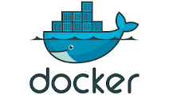
Docker
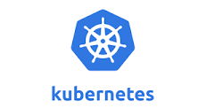
Kubernetes
MySQL
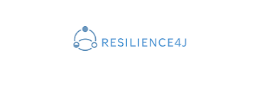
Resiliance4j
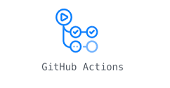
Github Actions
Jaeger
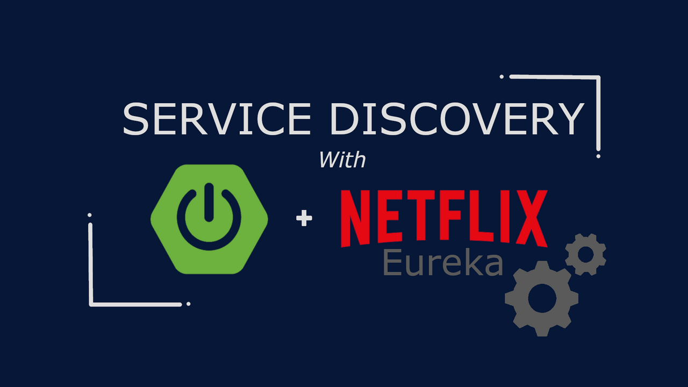
Eureka Service Registry
Github Productivity
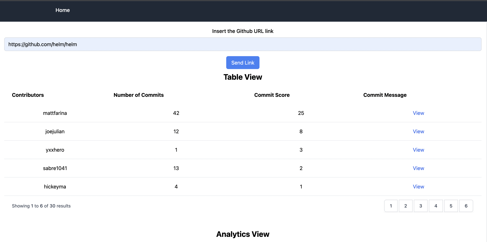
Introducing the Developer Productivity project, which collects GitHub data, calculates productivity scores, and generates reports for teams and individual contributors. Utilizing Flask and React frameworks, along with Docker containerization, this initiative offers an efficient solution for tracking and analyzing developer productivity.
Flask
React
Docker
Tailwind-CSS
Stock Information And Visualizer
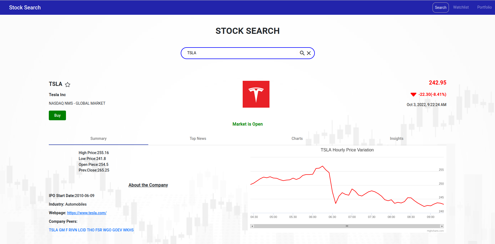
Step into the exciting world of stock trading with our fully responsive web app. Experience the thrill of the market as you engage in paper trading, buying and selling stocks without real financial risk. Stay ahead of the game with real-time stock price updates, track your portfolio, and gain valuable insights with visually stunning charts showcasing stock performance. Get ready to dive into the world of stocks and unleash your trading potential.
Angular
Node
Express
Bootstrap
Stock Trading App
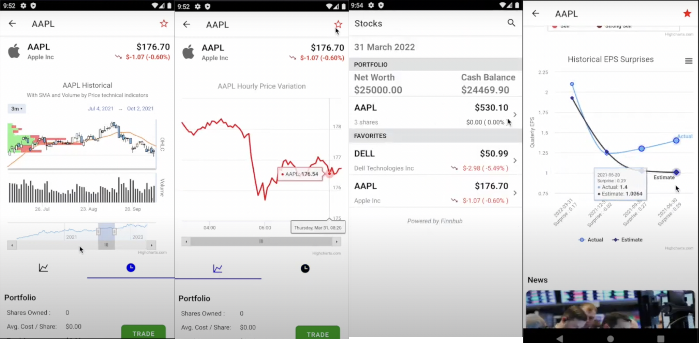
Embark on your trading journey with our innovative Android app. Experience the excitement of paper trading, where you can buy and sell stocks without any financial risk. Stay informed with real-time stock price updates, manage your portfolio, and gain valuable insights through dynamic charts that bring stock performance to life. Get ready to dive into the world of trading and unleash your potential with our feature-packed app.
Android
Node
Express
Kotlin
Word Attack
Immerse yourself in a captivating gaming experience where letters rain from the sky, waiting to be
collected by your sharp shooting skills. But be on high alert! Dodging treacherous rocks and relentless enemies adds
an exhilarating twist. Your health is at stake, so precise aim is crucial. As you gather the letters, a hidden word materializes,
challenging your intellect and strategic prowess. With each level, the game intensifies, pushing your shooting accuracy and mental acuity to their limits.
C#
Unity
Song Genre Prediction
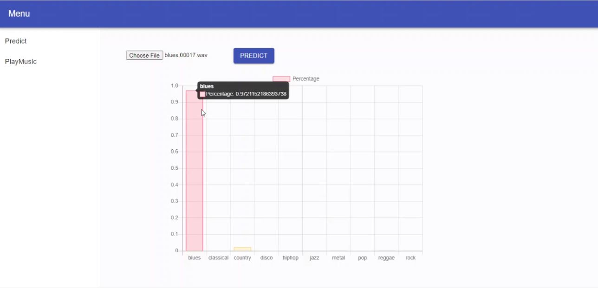
Experience a project that combines the realms of deep learning and web development. Witness the seamless integration as the backend, powered by a Convolutional Neural Network, predicts music based on user input, while the frontend transforms these predictions into mesmerizing visual representations. With an impressive accuracy of 92%, indulge in a unique and immersive musical experience crafted solely by your ingenuity.
React
Flask
Keras
librosa
PROJECTS
Distributed Microservices Archictecure in Spring Boot
This exciting project showcases the implementation of a highly scalable microservices architecture using Spring Boot. It leverages cutting-edge technologies like Jaeger, micrometer, Docker, and Kubernetes to achieve real-time monitoring, fault tolerance, and streamlined deployment through a CI/CD pipeline with GitHub Actions. The project demonstrates the innovative use of these technologies to create a robust and efficient microservices architecture.
Spring Boot
Docker
Kubernetes
Github Actions
Github Productivity
Introducing the Developer Productivity project, which collects GitHub data, calculates productivity scores, and generates reports for teams and individual contributors. Utilizing Flask and React frameworks, along with Docker containerization, this initiative offers an efficient solution for tracking and analyzing developer productivity.
Flask
React
Docker
Tailwind-CSS
Stock Information And Visualizer
Step into the exciting world of stock trading with our fully responsive web app. Experience the thrill of the market as you engage in paper trading, buying and selling stocks without real financial risk. Stay ahead of the game with real-time stock price updates, track your portfolio, and gain valuable insights with visually stunning charts showcasing stock performance. Get ready to dive into the world of stocks and unleash your trading potential.
Angular
Node
Express
Bootstrap
Stock Trading App
Embark on your trading journey with our innovative Android app. Experience the excitement of paper trading, where you can buy and sell stocks without any financial risk. Stay informed with real-time stock price updates, manage your portfolio, and gain valuable insights through dynamic charts that bring stock performance to life. Get ready to dive into the world of trading and unleash your potential with our feature-packed app.
Android
Node
Express
Kotlin
Word Attack
Immerse yourself in a captivating gaming experience where letters rain from the sky, waiting to be
collected by your sharp shooting skills. But be on high alert! Dodging treacherous rocks and relentless enemies adds
an exhilarating twist. Your health is at stake, so precise aim is crucial. As you gather the letters, a hidden word materializes,
challenging your intellect and strategic prowess. With each level, the game intensifies, pushing your shooting accuracy and mental acuity to their limits.
C#
Unity
Song Genre Prediction
xperience a project that combines the realms of deep learning and web development. Witness the seamless integration as the backend, powered by a Convolutional Neural Network, predicts music based on user input, while the frontend transforms these predictions into mesmerizing visual representations. With an impressive accuracy of 92%, indulge in a unique and immersive musical experience crafted solely by your ingenuity.
React
Flask
Keras
librosa
Genetic Sequence Algorithm
The project find the genetic sequence alignmnet in both memory-effecient approach and space-effecient apporach.
Dynamic Programming
Python
Naive Baye's Algorithm
Here we implemented the Naive Baye's classifier from scratch to identify the hotel's review.We classify the reviews as either truthful or deceptive or either positive or negative
Natural Language
Python
Accuracy: 91%
Simple Static Website
The project demonstartes a simple static website. The website will act as a template according to the user which can be modified according to the users need.
HTML
CSS
javascript
* Since it's a static website, the resolution should be adjusted accordingly.
Hidden Markov Model
The project is builts a Hidden Markov Model (including Viterbi Decoding) part-of-speech tagger for Italian, Japanese, and a test language. The training data are provided tokenized and tagged; the test data will be provided tokenized, and the tagger will add the tags. The performance on the model is based on the performance of your tagger. The test language is English
Natural Language Processing
Python
Accuracy: 91%
Cipher Text Detection
The project highlights a simple scenario for privacy-preserving Natural Language Understanding.The aim is to develope a text classification model based on ciphertext. The project uses TF-IDF to vectorize the cipher text and later uses the Support Vector Machines to binary classify the given cipher text input.
Natural Language Processing
Python
Accuracy: 90.33%
Precondition Inference
The goal of the project is to build a natural language reasoner to decide whether the precondition will enable or disable the statement.The input consists of sentence pairs.
. For each pair of sentence, the first one is considered as a precondition, while the second one is a statement.
For example: given the statement "A glass can be used to drink water", then the precondition "water is clean" enables this statement, while the precondition "the glass is completely broken" disables this statement.
Natural Language Processing
Python
Accuracy: 89.33%
Blog Post Analyser
The webapp allows the user to write and view other person's blog. The feature of this application is it analyses the blog post written by the user and allows them to filter the blog post. The post analyser is done after fine-tuning the pre-trained BERT model on the IMDB dataset. Further the frontend is build with the help of React along with ANT-Design. The additional feature of JWT authentication is also added for authentication.